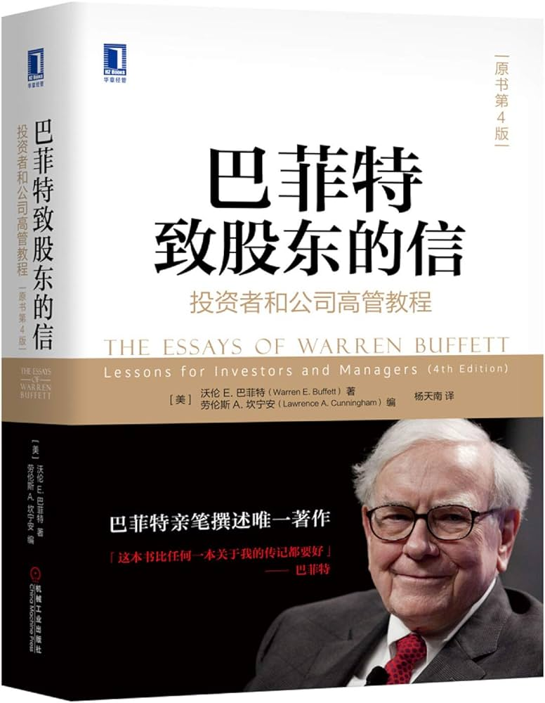

|  |
巴菲特致股东的信：投资者和公司高管教程（原书第4版） |
译者序 巴菲特成功的八字诀——与时俱进，良性循环
除了对于投资有兴趣的朋友外，我大力推荐企业家们应该好好读一读巴菲特。巴菲特的那句名言“我是一个不错的投资家，因为我是一个不错的企业家；我是一个不错的企业家，因为我是一个不错的投资家”，正是实业与资本结合的真实写照。
关于巴菲特一生的成功秘诀，已经有无数人做出了评价，我个人认为可以归结为八个字：与时俱进，良性循环。
巴菲特早年师从格雷厄姆，后来遇见费雪，再后来与芒格搭档，可以说是一个终身学习的典范。巴菲特曾经说过，自己85%是格雷厄姆、15%是费雪，但《巴菲特之道》作者哈格斯特朗的说法是，“如果今天有机会再做一次表述，巴菲特可能会承认他的方法50%来自格雷厄姆，50%来自费雪，二者平分秋色”。谈到芒格对自己的影响时，巴菲特说是芒格“让自己从猩猩进化为人类”。
可见，任何对于巴菲特投资理念僵化不变、刻板固执的理解，都是画地为牢，作茧自缚。真正的巴菲特是“活”的巴菲特，是与时俱进的巴菲特。
除了投资功力上的与时俱进之外，我认为还有一个非常重要的特征对于他取得今天的成功至关重要——良性循环。
良性循环又分为两个层面，一是财务上的良性循环；二是人际关系、社会关系上的良性循环。
一家公司的失败可能由各种导火索引发，或是研发不力，或是营销无方，或是库存积压，或是应收账款无法收回等，但无论是什么原因，最终有一点都是一样的——财务恶化。人们见过的所有企业失败基本上都是由财务上无法形成良性循环造成的。
反观巴菲特，无论是早年投资2500万美元买下禧诗糖果，还是后来投资10亿美元入手可口可乐，如今获得的分红早已远远超过当年的投资本金，而后续分红依然源源不断，且呈现出越分越多的趋势。这种“每做一笔投资，就多出一股现金流”的行为坚持了几十年，结果就是如今伯克希尔旗下拥有数十家企业，每年可以提供源源不断的资金弹药，这才是巴菲特可以大声说“我喜欢熊市”的底气所在。
良性循环的第二个层面是人际和社会关系上的良性循环。“与坏人打交道，做成一笔好生意，这样的事情，我从来没有遇见过。”巴菲特的这句名言令人深思。从早期买入内布拉斯加家具大世界时，对老板B夫人体现出的信任，再到后来大量购买《华盛顿邮报》的股票后，主动让出投票权释出的善意，无不体现了巴菲特的识人之智，日后也得到了正面积极的反馈。
第3版推荐序 一本渴望已久的书
总有些权威人士认为，对公司管理进行评估是浪费时间。原因在于，评估管理这个工作缺乏数字的精确性，而且即便管理能够被测量，它们的价值也已经反映在公司的财务报表之中，因此，任何对于管理价值的加减都有重复计算之嫌。对于这两种态度，巴菲特都不赞同。他对于管理的看法告诉我们，公司未来的价值很大程度上取决于管理层的行为。
第4版前言
开场白 与所有者相关的企业原则
就某种程度而言，我们的股东群体是相当不凡的一个群体，这使得我们和大家的沟通方式也非同寻常。例如，每一年的年底与年初相比，伯克希尔公司（Berkshire）的流通股股东名单中有98%是不变的。这种情况表明大家都是老朋友，我们不必年复一年重复之前说过的话。你们可以得到更多有用的信息，而我们也不至于感到厌倦。
此外，有大约90%的本公司投资者，他们持有的伯克希尔股票在其所有投资资产中是占比最大的，遥遥领先于其他持股。所以，他们愿意花更多的时间，仔细阅读年度报告。反过来，如果我们处于同样的位置，也希望能从年报中得到更多信息。
公司定位与股东之间的相处关系，与餐馆和食客的关系类似。你不可能在所有的时候满足所有的人。有人关注眼前回报高的投资，有人关注长期的资本增值，有人关注市场的动态，但你不可能面面俱到。
1983年，我总结了13条与所有者相关的企业原则，认为这将帮助新的股东了解我们的管理思路。既然称之为“原则”，那么这全部的13条时至今日，依然有效。
- 虽然组织形式上是公司制，但我们以合伙人的态度来行事。芒格和我将我们的股东视作我们的合伙人，而我们自己则是执行合伙人（因为无论是好是坏，从所占比例来说，我们都是控股合伙人）。我们并不将公司本身看作资产的最终所有者，而是认为公司仅仅是我们持有资产的一个渠道。
事实上，我们一点也不关心这些公司的股票好几年没有交易，甚至没有市场报价。如果我们对一只股票有良好的长期预期，那么短期的价格波动对我们来说毫无意义，除非有人报给我们一个非常有吸引力的价格。
- 大多数的公司董事会成员将伯克希尔视为自己的产业，他们财富的主要部分就是持有公司股份所带来的价值。换而言之，我们吃自己做的饭。
- 我们长期的经济目标（受到限制的部分会在后面提及）是伯克希尔公司每股内在价值的平均年回报率最大化。我们并不以公司规模来衡量经济意义或表现，而是以每股的增长来衡量。我们确信未来每股的增长率将会下降——这是由于资产规模过大所致。但如果我们的增长率无法超过美国大型企业的平均增长率，我们将会非常失望。
- 为了达成目标，我们的首选是直接持有一系列多元化的企业，从中获得稳定的现金流和持续的高于市场平均水平的资本回报。我们的第二选择是通过旗下的保险公司，主要是在市场上寻找便于交易的股票，从而持有一些类似企业的股票。股票的价格和可获得的程度，以及保险资金的需求决定了任何特定年份的资本配置。
- 由于我们的企业所有权方式以及传统会计方式的局限性，综合会计报表显示出的盈利无法真实体现出我们实际的经济成果。芒格和我既是所有者又是管理者，实际上会忽略这些由综合会计报表提供的数据。然而，我们会向你们报告我们所控制的重要企业所产生的收益和那些我们认为重要的数字。这些数字和我们提供的其他信息一起，将有助于你们做出判断。
- 账面的结果不会影响到我们的运作和资本分配的决策。在收购成本相近的时候，我们宁可购买那些根据标准会计准则，未在账面体现出来，但实际可以带来2美元盈利的资产，而不愿购买可以在账面上体现出来，但仅能获得1美元盈利的资产。这正是我们经常面临的情况，因为一个完整企业全部资产（所有利润都在报表中体现）的价格有可能会两倍于一个企业的部分资产（大部分利润未在报表中体现）。从整体和长期来看，我们希望那些未体现的盈利，通过资本增值的形式体现在我们的内在价值里。
- 我们非常谨慎地使用债务。当进行借款时，我们试图将长期利率固定下来。我们宁愿拒绝一些诱人的机会，也不愿意过分负债。虽然这种保守的策略会影响我们的收益，但是考虑到我们身后的保险客户、贷款人和那些将相当大部分财产交由我们管理的投资者，考虑到对他们的信托责任，这种方式是唯一能让我们觉得安心的办法。（就像印第安纳波利斯（Indianapolis）500汽车拉力赛的获胜者所说的：“想成为第一，首先你必须完成比赛。”）